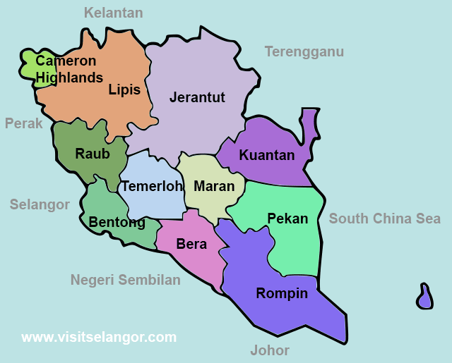

I was born and raised in Bentong, Pahang Darul Makmur. Basically, both of my parents are from Pahang. When I was younger, I lived in Perak for three years. However, I returned to Pahang in 2011 due to my parents' work. The good news is that I have many cousins on my mother's side who live in Pahang. So, the environment in my hometown is lively.
Why Do I Love My Hometown?

I am very grateful for being born in Pahang, my hometown. Pahang is well-known as one of Malaysia's largest countries. There are many conveniences available, and one of the reasons I enjoy living in Pahang is because of the delicious food and have variety of options.
One of my favourite Pahang dishes;
Ikan patin gulai tempoyak
Sambal tempoyak ikan bilis
Pucuk ubi masak lemak
Not to mention the beaches in Pahang, which are ideal for recreation and tourism. So I don't have to go far to find the beach.